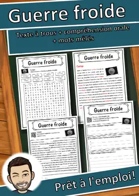
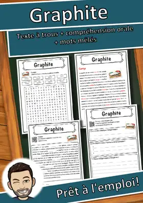
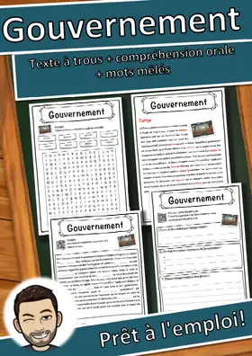
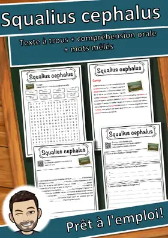
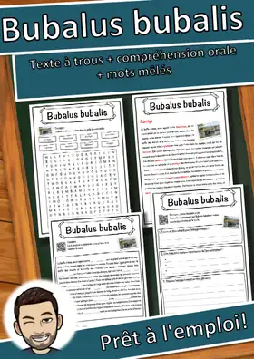
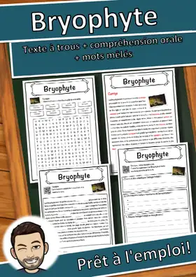
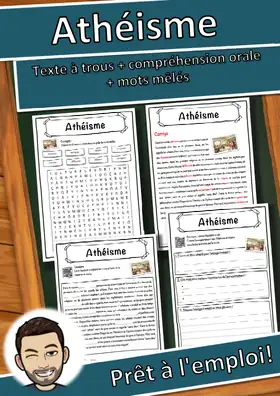
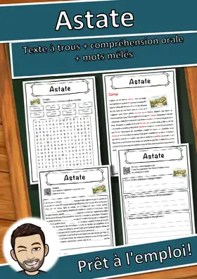

Fiches de lecture
Texte documentaire à trous avec banque de mots, compréhension orale par QR code (audio gratuit) et mots mêlés, avec corrigé.
3.797 ressources
Thème
Niveau

Mexico – Fiche : texte à trous, compréhension orale et mots mêlés

Mer Caspienne – Fiche : texte à trous, compréhension orale et mots mêlés

Marais – Fiche : texte à trous, compréhension orale et mots mêlés
Manganèse - Fiche - texte à trous, compréhension orale et mots mêlés

Malawi – Fiche : texte à trous, compréhension orale et mots mêlés

Macédoine du Nord – Fiche : texte à trous, compréhension orale et mots mêlés

Lanthane – Fiche : texte à trous, compréhension orale et mots mêlés

Johanna Spyri – Fiche : texte à trous, compréhension orale et mots mêlés

Jeunesses hitlériennes – Fiche : texte à trous, compréhension orale et mots mêlés

Jesse James – Fiche : texte à trous, compréhension orale et mots mêlés

Jakarta – Fiche : texte à trous, compréhension orale et mots mêlés

Intégration – Fiche : texte à trous, compréhension orale et mots mêlés

Instinct – Fiche : texte à trous, compréhension orale et mots mêlés

Houliganisme – Fiche : texte à trous, compréhension orale et mots mêlés

Homme moderne – Fiche : texte à trous, compréhension orale et mots mêlés

Holmium – Fiche : texte à trous, compréhension orale et mots mêlés

Historien – Fiche : texte à trous, compréhension orale et mots mêlés

Hibernation – Fiche : texte à trous, compréhension orale et mots mêlés

Hestia – Fiche : texte à trous, compréhension orale et mots mêlés
Hannibal Barca – Fiche : texte à trous, compréhension orale et mots mêlés

Guerre froide – Fiche : texte à trous, compréhension orale et mots mêlés

Graphite – Fiche : texte à trous, compréhension orale et mots mêlés

Gouvernement – Fiche : texte à trous, compréhension orale et mots mêlés
Gomphocerinae – Fiche : texte à trous, compréhension orale et mots mêlés
Fourmi – Fiche : texte à trous, compréhension orale et mots mêlés

Squalius cephalus – Fiche : texte à trous, compréhension orale et mots mêlés
Burkina Faso – Fiche : texte à trous, compréhension orale et mots mêlés

Bubalus bubalis – Fiche : texte à trous, compréhension orale et mots mêlés

Bryophyte – Fiche : texte à trous, compréhension orale et mots mêlés
Bos taurus – Fiche : texte à trous, compréhension orale et mots mêlés
Belize – Fiche : texte à trous, compréhension orale et mots mêlés

Basson – Fiche : texte à trous, compréhension orale et mots mêlés

Backgammon – Fiche : texte à trous, compréhension orale et mots mêlés

Azerbaïdjan – Fiche : texte à trous, compréhension orale et mots mêlés

Anguis fragilis – Fiche : texte à trous, compréhension orale et mots mêlés

Altaï – Fiche : texte à trous, compréhension orale et mots mêlés

Adoption – Fiche : texte à trous, compréhension orale et mots mêlés
Berkélium – Fiche : texte à trous, compréhension orale et mots mêlés
Baryum – Fiche : texte à trous, compréhension orale et mots mêlés

Athéisme – Fiche : texte à trous, compréhension orale et mots mêlés

Astate – Fiche : texte à trous, compréhension orale et mots mêlés

Alfred Escher – Fiche : texte à trous, compréhension orale et mots mêlés

Adverbe – Fiche : texte à trous, compréhension orale et mots mêlés

Aar – Fiche : texte à trous, compréhension orale et mots mêlés

Gluten – Fiche : texte à trous, compréhension orale et mots mêlés

Fumée – Fiche : texte à trous, compréhension orale et mots mêlés

Fonds des Nations unies pour l'enfance – Fiche : texte à trous, compréhension orale et mots mêlés

Flérovium – Fiche : texte à trous, compréhension orale et mots mêlés
Aucune ressource trouvée – essaie un autre mot ou un autre filtre.